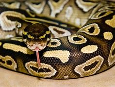

Best Snakes to Own

There are many species of snakes in captivity and despite the common idea, snakes make great pets!
Here are a few reasons
- While start up costs can be high, maintainance is cheap
- Most have a long lifespan
- They are quiet
- They don't require constant attention
- They have peronalities
When looking for a new snake friend to bring home, there are many species to choose from. Diffrent species require diffrent ammounts of care and enrichment to maintain. this varries from species as well as the personality of the individual snake.
Most common species to own
- Ball python
- Corn snake
- King snake
- Milk Snake
- Garter snake
- Boa constrictor
- Carpet python
- Green Tree python
- Roasy boa
- Blood Python
For more on the subject click here!
To talk more about snakes or schedule a school reptile learning show, Contact me
email